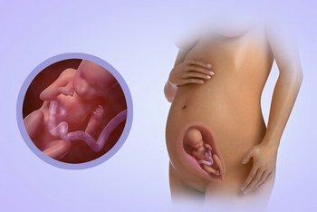
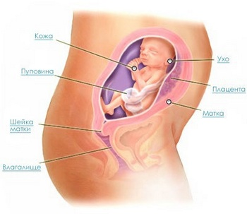

23 неделя беременности
К концу недели в случае преждевременных родов шансы выжить у ребенка составляют 50%. Врачи называют этот период летом, поскольку, как и в периоде, в животе у будущей мамы происходит активный рост ребенка.
У малыша уже развиты все мышцы конечностей, и он сам уже способен проверить их силу. Активные шевеления на 23 неделе беременности чередуются с полным затишьем.
Длина малыша: 30 см.
Вес малыша: 530 г.
Несмотря на то, что у ребенка активно закладывается жировая ткань, он еще очень сморщенный и красноватого цвета. Все дело в том, что кожа у человека формируется намного быстрее, чем успевают сформироваться жировые отложения и кожа у малыша немного обвисшая. Краснота тоже научно доказана. Все дело в пигменте, который делает ребеночка менее прозрачным.
Малыш растёт, увеличивается его масса, развиваются органы чувств.
Исследования доказывают, что ребёнок в возрасте 23 внутриутробных недель уже может видеть сны!
На этом этапе плод становится более активным, но толкания происходят очень мягко. Если сейчас провести УЗИ плода, то можно заметить, как малыш хватается за пуповину и двигает ножками и ручками.
Так же ребенок продолжает глотать небольшое количество жидкости, которая потом выходит из него в виде мочи.
Примечателен тот факт, что ребенок уже может икать, а будущая мама это очень хорошо чувствует. При икоте плод будто подпрыгивает внутри живота.
Теперь у ребеночка уже сформированы ноготки, у него в кишечнике образуется кал, который называют меконий.
Та часть головного мозга, которая отвечает за память, моторику и интеллект, готовится к обеспечению обмена сигналами между клетками. Быстрые движения глаз начинают наблюдаться во время его сна.
Пока малютка очень худенький, похож на старичка. Глазки его открылись, он умеет различать свет и тьму. Малыш боится резких звуков, шума, ему приятны ваш спокойный голос и мамины колыбельные.
Внутриутробное развитие плода на 23 неделе беременности
ВАШ ОРГАНИЗМ
От болей в спине вам помогут лед, теплый компресс или легкий массаж для расслабления, вам нужно только выбрать, что помогает именно вам.
Ваша матка расширяется и ее дно возвышается над вашим пупком на высоте 4 см. Могут проявится такие симптомы, как онемение или покалывание в пальцах (так называемый синдром запястного канала), особенно если вы ждете двойню.
Кровоснабжение становится еще сильнее, поскольку с ростом ребенка ему требуется еще больше питательных веществ, а они, как известно, поступают через плаценту.
В матке шеечный канал начинает заполняться густой слизистой массой, а выделения молочно-белого цвета становятся все более частыми.
С этими выделениями можно и нужно бороться при помощи гинекологических свеч, однако стоит проконсультироваться с врачом.
Ощущения на 23 неделе беременности омрачают растяжки, которые появляются из-за роста живота.
Так же этот период характеризуется схватками Брестона-Хигинса. Они появляются вследствие шевеления ребенка, но никакой опасности, кроме незначительных болевых ощущений, ни для мамы, ни для малыша они не представляют. В науке их называют «тренировкой к родам».
За день таких схваток может произойти около 10-15 штук. В том случае, если такие «тренировки» происходят часто, а женщина чувствует невыносимую боль –нужно срочно вызвать скорую помощь.
Сейчас очень опасно болеть простудными заболеваниями, особенно это касается гриппа. Все дело в том, что сейчас происходит очень активный рост мышц и костей, но организм очень слаб, чтобы противостоять вирусу. В случае заболевания у малыша могут впоследствии возникнуть проблемы с сердечнососудистой, выделительной и нервной системами.
Помимо гриппа, следует внимательно отнестись к своим ногам, поскольку плод становится тяжелее и может возникнуть варикозное расширение вен. Во избежание таких проблем, как уже говорилось, лучше приобрести специальный эластичный бинт, которым каждый день врачи советуют перебинтовывать ноги. Обувь должна быть максимально удобной и без каблуков.
ЗДОРОВЫЕ СОВЕТЫ
При учащенном мочеиспускании, не стоит пить на ночь много жидкости. Не терпите долго при появлении позывов.
Можно посещать туалет с периодичностью раз в 3-3,5 часа. Но если мочиться стало больно, нужно как можно скорее обратиться к врачу (это может быть цистит).
Если к вечеру у вас стали отекать ноги, то приходя домой, полежите некоторое время с приподнятыми ногами. Под колени можно положить подушку или закинуть ноги на спинку дивана.
Также делайте специальные упражнения для ног, это улучшит отток крови. Например, стоя на месте, поднимайтесь на носки и опускайтесь на пятки, вставайте со стула на пятки и т.д. Стоит посоветоваться с врачом-флебологом. При необходимости он порекомендует носить компрессионный трикотаж (колготы или чулки), назначит препараты, повышающие тонус вен.
22 неделя